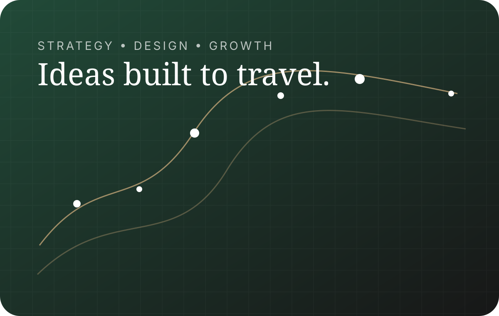

Graphic & web design
Identity systems, websites, campaign graphics, print materials, digital experiences, and clear design standards.
Creative strategy from the edge of the map
Fox & Timber helps businesses shape strong identities, launch useful products, and communicate clearly through design, marketing, advertising, and thoughtful business development.
Every engagement is scoped around the client. Pricing is discussed after an initial consultation.
 37.2753° N 107.8801° W
37.2753° N 107.8801° W
What we bring
We do not decorate problems. We find the useful idea underneath them, then build the identity, message, systems, and launch plan needed to move it forward.
Identity systems, websites, campaign graphics, print materials, digital experiences, and clear design standards.
Positioning, content direction, campaign concepts, social strategy, advertising creative, and channel planning.
New businesses, new products, brand evolution, relaunches, and the systems required to introduce change with purpose.
Offer development, customer journeys, partnerships, presentation materials, and creative support for sustainable growth.

How it starts